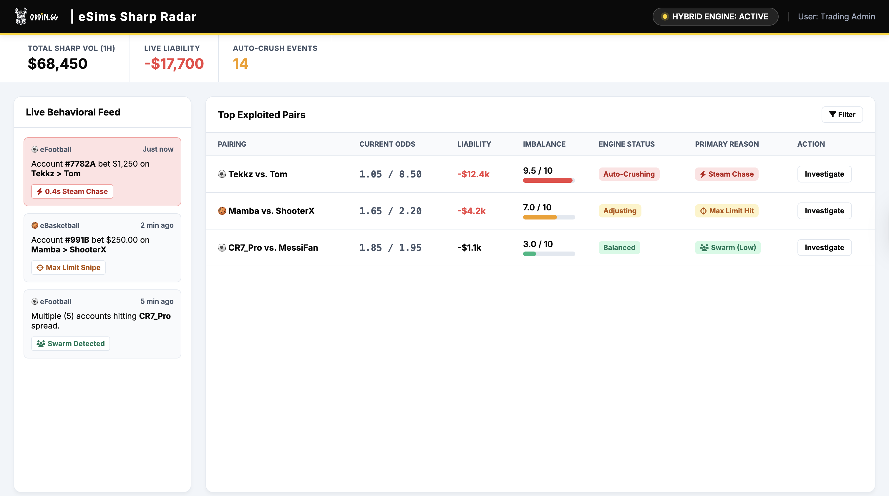

Diagnosis, Prioritization, and Algorithmic Triage
Framing the Problem
I frame this as a Technical Debt and Model Staleness crisis. We are currently leaking margin through two systemic avenues that must be resolved collaboratively:
Dynamic Player-Pair imbalances (Skill Drift) leading to sharp exploitation.
Market Correlation Gaps (DDA) causing portfolio-wide systemic mispricing.
Day One Collaborative Request
Before any modeling begins, I would initiate a cross-functional deep dive with Data, Analytics, and Trading to request:
Granular P&L breakdown by title, specific market, and bet-type (e.g., Pre-match vs. Live).
Player-pair P&L concentration analysis — is the financial bleed driven by targeted sharps or broad swarms?
Statistical analysis of correlation residuals on the top 10 market pairs to isolate DDA impact.
Q1 Triage: Hybrid Exchange Engine
A temporary algorithmic shield to front-run market corrections by weighting volume based on bettor classification:
Recreational
Neutral Weight
New / Unverified
Caution Weight
Sharp / Toxic
Crash-Line Weight
Strategic Impact: Adjusts odds based on liability before the sharp bet can extract maximum value. Works as an immediate band-aid for both correlation and pairing gaps.
MVP: Sharp Radar & Studio Notify
I prototyped this tool with Gemini Code to detect imbalances instantly without diverting Math capacity.

Why P0: Reaction Time Kills Latency Arbitrage
Manual Trading Adjustment
Traditional Auto-Trading
Oddin Hybrid Engine (PM-Built)
The 0.5s reaction kills the latency arbitrage sharps rely on. This is why the Hybrid Engine is P0 — it protects capital instantly, without consuming a single Math team week.
ICE + Cost of Delay (CoD) Framework
In backend algorithmic models, "Reach" is secondary to Capital Integrity. We prioritize based on financial risk of inaction.
Strategic Priority Matrix
| Initiative | Impact | Effort | Cost of Delay (Bleed) | Priority |
|---|---|---|---|---|
| Hybrid Engine + Radar (PM Built) | High | Zero (Math) | Critical | P0 - Immediate |
| Correlation Gaps (eFootball) | Critical | High (8w) | High (Flagship) | P1 - Strategic |
| Pairing Model Fix (Portfolio) | Medium | High (6w) | Low (Mitigated) | P2 - Optimization |
| eHockey MVP Vertical | Expansion | Med (4w) | Low (Growth) | P3 - Expansion |
How I Lead the Math Team Partnership
My operating principle: I explain the why and what we want to achieve. I give the team clarity on the goal and full freedom to evaluate the best technical options. But always time-framed — to avoid derailing or analysis paralysis — and always evaluated: what was achieved, what's next.
Stakeholder Alignment
I align stakeholders by ensuring every team wins through a structured roadmap, rather than issuing a flat "no" to expansion.
Gets a "When", not a "No". Launches are tied directly to objective margin recovery gates.
Gets a Measurable Gate they control (Radar Index) before accepting new title volume.
Gets Focused Work. Complete protection from commercial "whipsaw" priorities and academic paralysis.
Phased Roadmap (Q1-Q3)
• Hybrid Engine Live
• Launch Radar (PM)
• Fix eFootball DDA
• Portfolio Pair Math Fix
• eBasketball DDA Fix
• Build eHockey Engine
• eHockey Beta Launch
• Gaps for eCricket
• Audit Portfolio Health
Milestones & Go / No-Go
| Checkpoint | Metric | Action Gate |
|---|---|---|
| End of Q1: Shield Live | Sharp ROI reduction > 20% | GO Proceed to Q2. |
| End of Q2: Core Quality | Margins within 1% of target | GO Build Vertical. |
| End of Q3: eHockey Launch | Margin stability confirmed | GO Full market rollout. |
| Job to be Done | Tool | Where My Judgment Overrode AI |
|---|---|---|
| Market research | Gemini Deep Research | AI compiled data on eBB, eHockey, eFighting. I selected the facts that shaped the diagnosis — DDA, pair playing, frame-data risk. |
| Hybrid Exchange Algorithm | My concept | The exchange-based triage layer with toxicity weighting is entirely my idea. AI helped refine the implementation logic, not the concept. |
| Sharp Radar Prototype | My concept + Gemini Code | I designed the product concept and UX. Gemini Code built the working HTML. The idea of a PM-built tool that protects capital without consuming Math bandwidth is mine. |
| Prioritisation framework | Claude Opus | AI suggested extending RICE to ICE (adding exploit/credibility dimensions). I added Cost of Delay as the extra measure — the weekly capital bleed that makes inaction quantifiable. |
| Presentation + materials | Gemini Pro + Claude | AI generated slide structure, styling, drafts and format conversion. I edited content, flow, and all recommendations. |